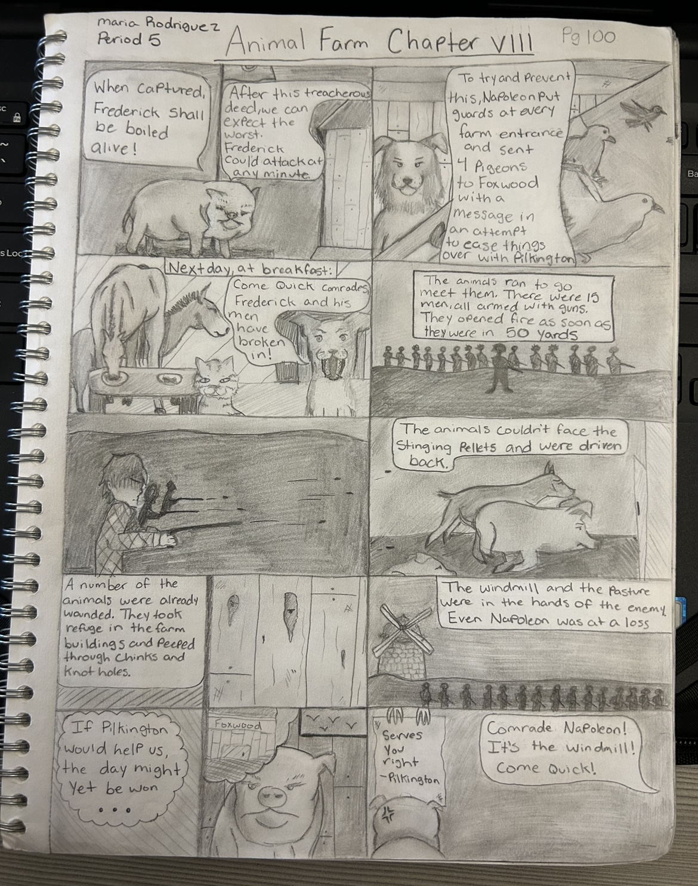
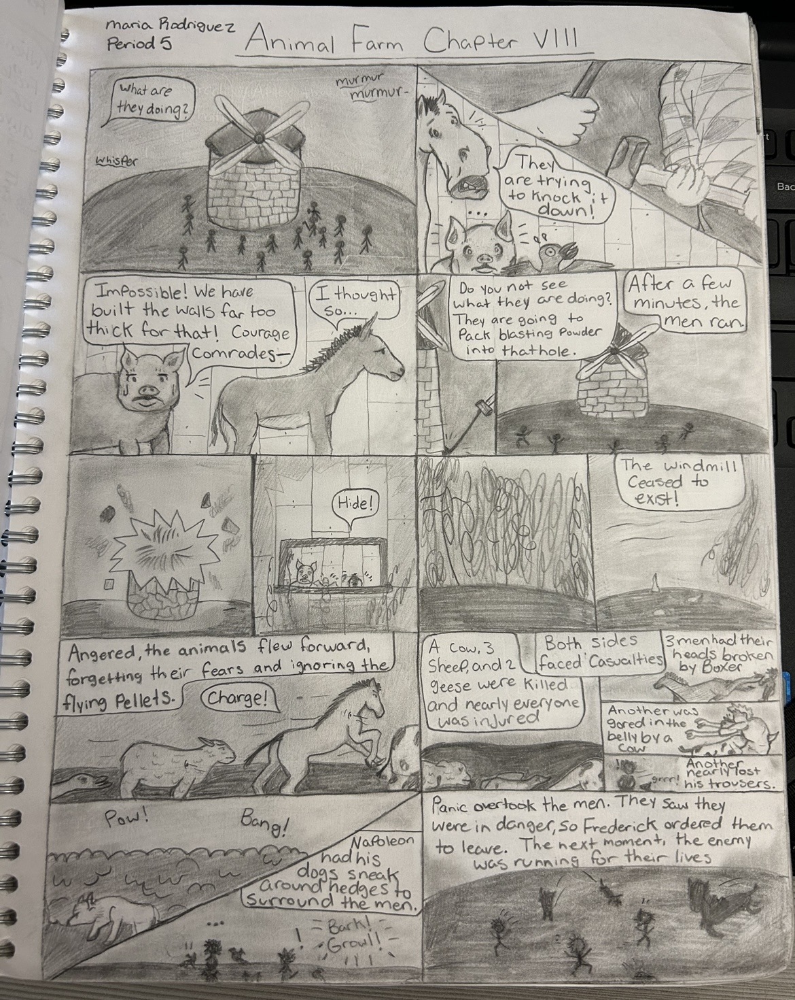

 
I've been drawing ever since elementary school, but have especially improved since 8th grade. I mainly do drawings from different anime or cartoons, and love experimenting with any medium I can: some of my favorites being alcohol markers, colored pencils, and paint. Digital art has become more common for me to use because of school, so I've gotten better at that too. Aside from paper and tablets, I also paint on different objects, I've even painted my own light switch recently! I love being able to be expressive and use these skills I've taught myself to please others and hope to get a career in art soon! (I do want to note that these are not all my drawings. I think this website [and/or my sanity] would break if I added all of them, so these are just a few of my favorites 😅)